General Concepts
Files and Views
Linking
Files Together
Slave Windows
Files and Views
Opening files
Adding new views
Deleting views
Using views
Opening files
As with all programs, you can:
-
Use drag and drop from the Explorer (the Chef's choice).
-
Menu File|Open, select the file type, then choose the file.
-
Double-click on the file from the Explorer. Note that in this case, you start a new running instance of Cartool, and having multiple Cartool running at the same time is not very memory efficient, though it will work. If it does not work or crashes? see here or here.
The file opens as a Document inside Cartool, with a default View attached to it. Then you can add new views to the document, that can be of different types of display, or delete the views . When the last view is destroyed, the document is closed and removed from Cartool's memory.
Adding new views
You can add as many views to the same document as you wish, all showing the same data from the Document. You can use either:
-
Press Control + A (the Chef's choice).
- Click on button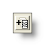.
- Menu Window | Add View , and choose the view type if asked for it.
Deleting views
Simply destroy the window by closing it.
When the last View of a Document has been closed, the Document itself is closed, and removed from Cartool's memory.
Using views
Here is what you can do with all views:
-
NumPad * will quickly inflate the window global size by 26% (repeated 3 times will make the window double in size)
NumPad * + left or right arrow will quickly inflate the window horizontal size by 26%
NumPad * + up or down arrow will quickly inflate the window vertical size by 26% -
NumPad / will quickly shrink the window global size by 26% (repeated 3 times will make the window half in size)
NumPad / + left or right arrow will quickly shrink the window horizontal size by 26%
NumPad / + up or down arrow will quickly shrink the window vertical size by 26% -
Letting the cursor on any button will bring a tool-tip window, giving a short message of its signification, and a keyboard shortcut. This is usually the most up-to-date help.
Linking Files Together
Linking files is a key feature of Cartool, so it is very important to get used to it and to understand all the benefits you can get from it.
What is "linking files"?
Link display explained
How to link files together
How to use the linked files
Creating new windows
Synchronization
More technical points
What is "linking files"?
Simply, it is binding together files that are in some way related and consistent relatively to each others. This is achieved (right now) through a simple listing in a .lm file , and brings the following benefits:
-
Avoiding and controlling information redundancy, for example by checking that all linked files do have the same number of electrodes, or that only one file contains the electrodes descriptions. F.ex. a link file containing 3 compatibles EEG files linked together with one electrode coordinates file:
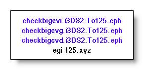
-
Sharing informations between the linked files, for example all files will have access to the sampling frequency of the EEG, or the names of the electrodes even though they do not have these informations by themselves.
-
A consequence of the previous point, new types of display are therefore available . Sharing information gives more powerful displays. F.ex. 1 EEG file plus 1 electrode coordinates file can generate a spatial rendering of the potentials:
The link file content itself:
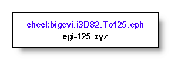
The 3 windows it can produce (EEG tracks, electrodes coordinates, scalp potentials):
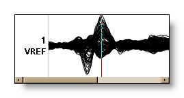+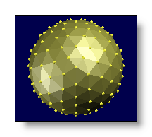=>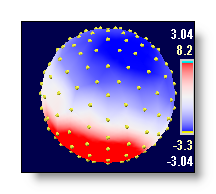 -
Easily saving and managing your work for later use, as the files association is saved on disk.
-
Securing your data and results, as you know you always reopen the very same files, and can re-process your data with either the same parameters (for double-checking), or other parameters (for new trials). Absolute path is taken to differentiate between files with same file names, so be careful when moving files around.
2 examples of link files, one putting a set of EEG files together, another one linking together everything you need for some inverse solutions, but without any EEG files:
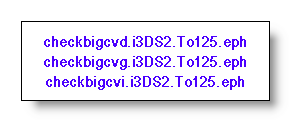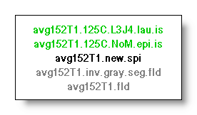
Link display explained
Here are the windows you will see when dealing with link files:
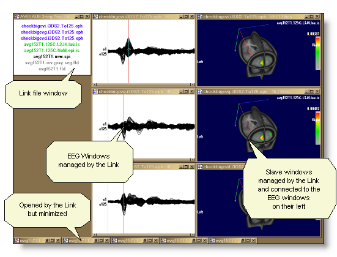
-
Upper left is the link window itself, which lists all the files contained into the link. Double clicking on a file name will maximize or minimize the appropriate windows.
-
On its right, all the windows managed by this link. They do not belong to the link itself, as they are independent documents, but receive commands and share informations through the link mechanism.
-
The managed windows can be divided into 2 categories, the EEG "master" windows , and the other slave windows . Slave windows depend of the EEG windows immediately on their left.
-
At the bottom, some windows opened and minimized to unclutter the display.
How to link files together
Create a special file of type .lm, with one of these way:
-
Menu File|New 'Link Many' file, which will straight away create an empty link file (but after you filled it, don't forget to save it on disk before closing Cartool!)
-
Menu File|New then selecting Link Many Files. Some dialogs will pop out, asking for the files to be linked. When finished, the name of the link file is also asked, and saved to disk.
Update the link at any time with:
-
Drag files from the Explorer and drop them inside the link window. Regular files will be added directly. But dropping another link file will copy its content . A very useful way to use this is to have a set of predefined linked files, linking to often used files, that will be added on demand in a single operation. F.ex. 2 separate link files that merge together:
dropped into
generates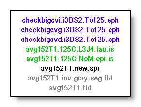
(the managed windows it may generate are not shown here) -
From the link file window, press on the "Add files" button 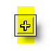. A "+" shaped cursor appears, click on the windows (within Cartool!) of already open files to include them on the fly. If you click on another link file, as in the previous point, all the files it contains will be transferred at once. Click in the background to stop linking..
On each addition of a new file, here is what happen in real time:
-
The file is checked against all the others for all possible consistencies. F.ex. all number of electrodes or solution points should be the same across all files.
-
If the check is successful, the file is accepted,
and added to the link file.
-
If a new type of display is available, due to these
new incoming informations, a new window
is created straight away (so you don't have to request it), and all
the other windows are refreshed. So don't be surprised to see windows
opening and shuffling all around your screen, just wait.
- Linked files are locked, and can not be individually closed, to prevent the link integrity. Closing the link file will remove all locks, and will also close the linked files.
How to use the linked files
Once open, from the link window itself, you can operate on the windows it manages:
-
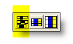Tile all managed windows by compacting the display, still keeping current windows size .
-
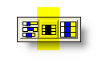Tile
all managed windows by compacting the display, and assigning
default
sizes
to all windows.
-
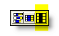Tile
all managed windows by compacting the display,
resizing
all windows to fit in a single page
.
-
see
adding files.
-
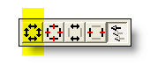to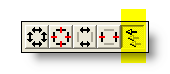see
synchronization.
-
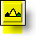will
call the segmentation procedure.
- In the link window itself, double clicking on a file name will maximize or minimize the appropriate windows.
Creating new windows
More interesting is what you can do from any window managed by the linked files (say, from an EEG window). As said earlier, informations are now shared amongst all the files. By requesting a new view , a context sensitive list of currently available displays will pop out. See also the related topic on " slave windows ".
Currently, here are the different types of windows (according to the link content):
-
Tracks display, with new available renderings:


-
3D potentials display:
-
3D inverse solutions:
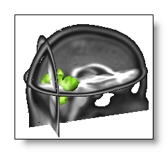
Synchronization
The Synchronizing menu, together with the following buttons, provide some predefined way to synchronize the managed slave windows :
-
Synchronize all
All windows are synchronized at once:
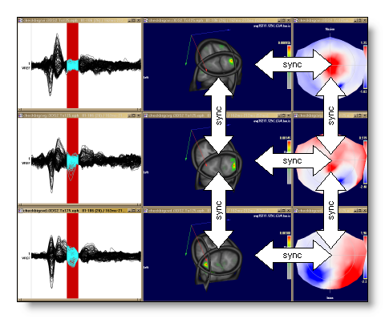 -
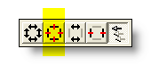 Desynchronize all
Clear all synchronizations, all windows are independent again:
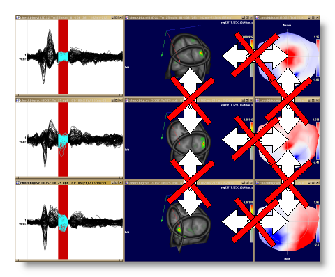 -
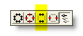 Synchronize only within same EEG
Each EEG will synchronize all of its own slave windows (create "horizontal" synchronizations):
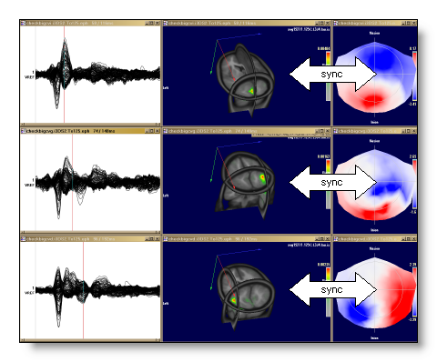 -
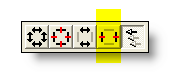 Desynchronize between different EEGs
Break any existing synchronizations between windows from different EEGs (break the "vertical" synchronizations). Still preserving existing "horizontal" synchronizations:
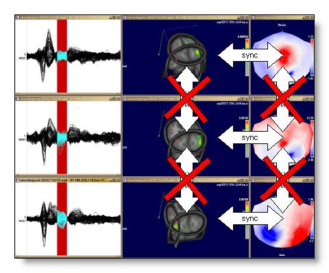 -
Clone user commands within likewise windows
Once activated, (most) commands done in any window will spread to the other windows of the same type (f.ex. EEG to EEG, Potential Maps to Potential Maps, etc...). Simply put, it allows you not to repeat the tunings done in one window again in the others.
The commands modifying the time cursor are not spread, because they are specifically handled by the synchronization process (see above). Then through the right combination of settings, you can choose either to modify the setup of the windows, the time cursor, or both.
Commands include left and right mouse operations (rotation, zoom, brightness and contrast), and all buttons (including keyboard shortcuts) except those that apply to time.
More technical points
When opening a link file, Cartool will open all the files listed into it. Many of them will be straight away minimized to clean up a bit the display. Typically, the electrode coordinates, inverse solutions matrices, MRI's etc...
Creating a new view from a given window will actually create as many views as there are EEG files , one for each of them. The new views will be assigned the rightmost position of all managed windows .
Slave Windows
See the Linking files paragraph beforehand, as it applies to windows created within the link mechanism only .
Windows in slavery...
Controlling your slave windows 


Windows in slavery...
All views managed by the link mechanism
are not equals, the EEG display naturally leading all the
others attached to it as it contains the source of the data flow,
thus being the "master".
All the other windows are
therefore "slaves"
to it, and need at least one
"master" for existing (see here
for a summary of the various windows available).
F.ex. moving the cursor inside the EEG window (on the left, the
master), will drive and update the scalp potentials window (on the
right, the slave) in real time:
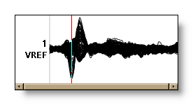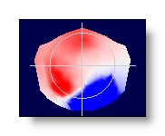
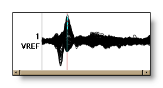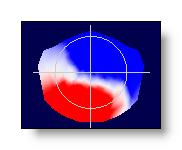
You can have for the same EEG as many windows as you want, just create them. New "slave" windows will be assigned the last EEG "master" window created. Two examples here show 1 tracks display and 3 potentials display associated, then 2 tracks display and respectively 2 and 1 potentials displays associated:
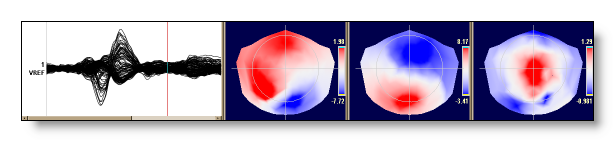
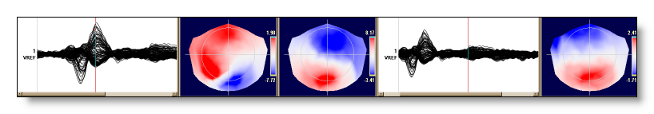
Note that the potential windows, though they usually share a single EEG tracks display, are independent one of the others. That means the time cursor is moved only for this particular window.
Controlling your slave windows
Slave windows have a few extra controls over the world (a little compensation...):
-
Synchronizing
with other slave windows,
a key feature of Cartool (See also the
synchronizing
menu
, to operate globally).
A clock-like cursor appears, with which you can click on other slave windows, even from other link files. These windows will be time-synchronized, so moving the cursor in any of them will update the cursor in all the others. F.ex. 3 windows before (independent cursors) and after (3 cursors equals) synchronization:
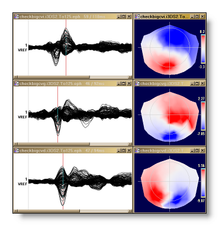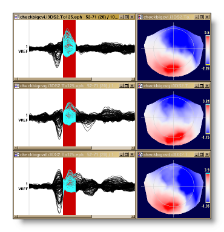
If 2 groups of windows, say { A, B, C } and { D, E } respectively are already synchronized, it is enough to synchronize f.ex. windows A and D to merge the 2 groups together, { A .. E } becoming synchronous ("Synchronicity is transitive").
Synchronicity does account for different sampling frequency, so you can sync an EEG sampled at 1000Hz and another one sampled at 256Hz correctly. EEG lengths can also differ, the cursor being safely clipped to the limits of each EEGs.
To stop the synchronizing process, click on the background.
To desynchronize a window from all the others, click with the clock-like cursor on the window itself.
By default, when opening a link file, all EEG windows synchronize all their "slave" windows with them. Simply means you can move the cursor, and see the result accordingly!
-
Average
the values of the EEG if the
time
cursor
spreads across multiple time frames, then show the result:
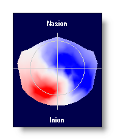
-
Display a sequence of time frames if the
time
cursor
spreads across multiple time frames.
Usually, there are more than one sequence layout available, just click again to toggle through all possibilities (the number of frames is controlled here):
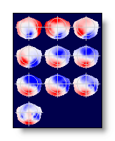
-
Run an animation if the time cursor
spreads across multiple time frames. Click again to stop
or restart the animation (speed is controlled here):
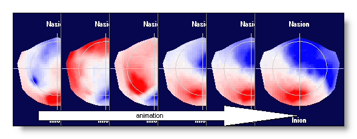
-
In case of sequence or animation,
reduce the number of
frames, or the speed
.
-
In case of sequence or animation,
increase the number of
frames, or the speed
.